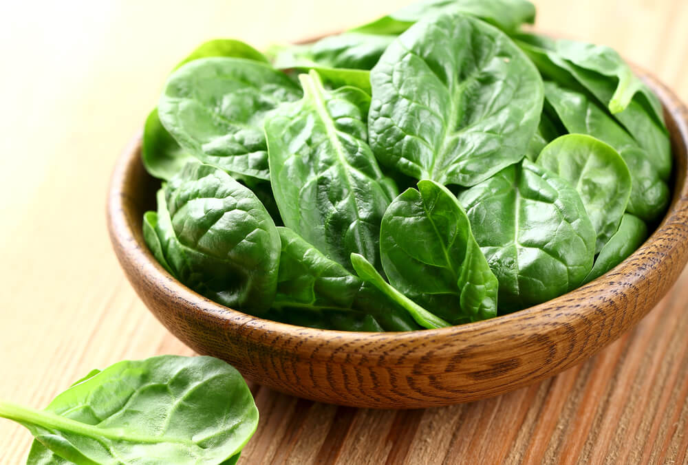

COMO SE CULTIVAN:
la epoco del año en la que se suele cultivar es Primavera - Otoño se planta directamente en la tierra tardan dos meses de cosechas desde que fueron plantadas, el maceteto donde se planta tiene que tener una profundidad mínima de 15 cm. Y la semilla se planta a 2 cm debajo de la tierra. Entre surco y surco del huerto tiene que haber una distancia de 30 cm para dejar que la planta o frutonio se junte con las otras y crezca "libre" y entre semilla y semilla plantada encima del surco tiene que haber una distancia de 10 cm.
ALGUNAS DE LAS REDCETAS MÁS RICAS CON ESPINACAS:Enlace a la pagina de las recetas
|
